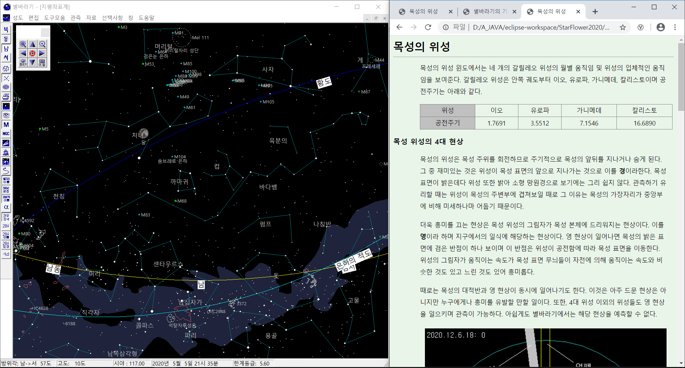

설명서 활용 Tip
-
설명서 대부분의 그림은 클릭 시 전체 화면으로 바뀌며 확대/축소가 가능하다. 단, 카카오톡에서는 그림을 길게 누른 후 '열기' 메뉴를 선택하면 된다. (클릭만으로 안된다.)
-
웹 브라우저로 크롬을 권장한다. MS Explorer보다 표준을 잘 따르는 브라우저이다.
-
윈도우즈에서'윈도우키' + '방향키'를 누르면 해당 방향으로 윈도우가 이동한다.
이를 이용하여 다음과 같은 화면을 만들면 별바라기와 사용설명서를 함께 볼 수 있어 편리하다.
- 별바라기를 실행 후 '윈도우키' + '좌 방향키'를 누른다.
- 웹 브라우저를 실행 후 'starflower.info' 페이지에 접속한다
|

|
- 웹 브라우저에 포커스가 있는 상태에서 '윈도우키' + '우 방향키'를 누른다
- 가운데 분할선을 클릭하여 좌우 화면의 크기를 조절할 수도 있다.
|
-
***************
별바라기 홈 최종 변경: 2020년 05월 31일